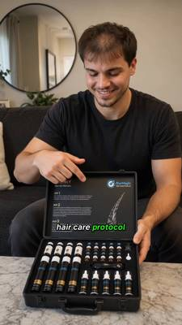
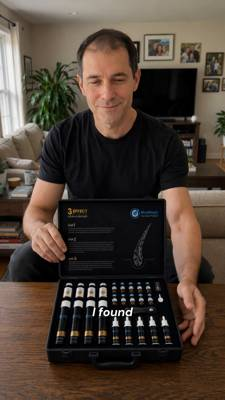
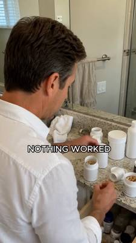
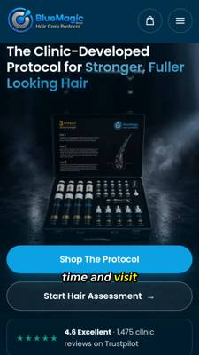
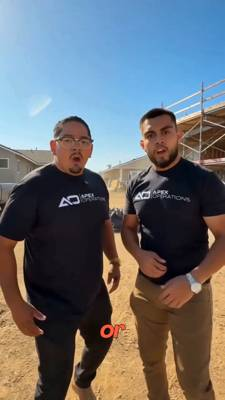
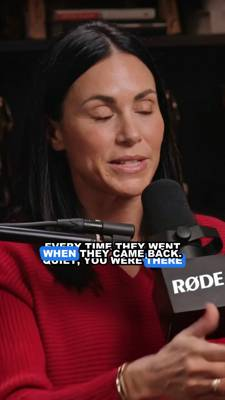

I take direct-response ads from angle to finished asset without handing off. I write the hook, generate the creative, build the automation that ships it at volume, and read the result to choose the next test.
Awareness level, objection, hook archetype, and where the click should land — decided per asset, not per batch.
AI UGC, digital spokespersons, product demo, 4K vertical. Character held consistent across a full campaign.
Custom agents, QC gates, scheduled publishing. ~3,450 lines of Python behind one live content operation.
Istanbul hair-transplant and dental clinic selling a clinic-developed home protocol into the UK and EU. 35,000+ patients across 120 countries. One of the most expensive, most saturated lead-gen categories on Meta.
“This was my hair six months ago, when I started realizing I was balding — and honestly thinking it was too late.”
Failed-solutions stack → discovery

“I matched with her three days ago. I still haven't replied. Because of my hair.”
Live unresolved stake in three seconds

“I used to avoid every photo, every mirror, every event — made sure no one was sitting behind me.”
Avoidance inventory → month 1/3/6

“Six months ago I thought I was actually going bald. But this is my hair now.”
Payoff up front → mechanism

Two CTAs, two awareness levels.
Shop / Assessment + Trustpilot 4.6
Four slots can buy one lever tested four times, or four levers tested once. In a category where every competitor opens on a hairline close-up, the scarce thing isn't production — it's a reason to keep watching.
So each asset enters on a different emotional door: regret, romantic stakes, social withdrawal, proof. The offer never changes. Only the way in does.
The dating hook is the one I'd scale. It names a live, unresolved situation and attributes it to the product problem inside three seconds, with no category language at all.
Proof — 35,000 patients, real clinics in London, Dubai, Istanbul.
Mechanism — five minutes a day, one case, one system, nothing else to buy.
Risk reversal — 14-day returns, free worldwide shipping, and no subscription.
Calling out “no subscription” is deliberate. The category is defined by subscription traps, so naming the absence kills the single biggest objection before it forms.
US marketing agency out of San Jose, California, selling lead generation to contractors and trades across 28+ states. The offer is a guarantee: 150 qualified leads in 90 days, or they work for free.

The ICP line names the ADU builder — accessory dwelling units, a permit category specific to California and a handful of US states. A contractor hears that and knows the ad was written by someone who looked at their market.
Generic “home improvement professionals” copy fails the same audience in the same three seconds, no matter how well it's produced.
These four are deliberate variants of one proven script — the variable is delivery and setting, not angle. Shot on a residential street, a jobsite, a build in progress.
Where BlueMagic tests which door people walk through, this tests which room they trust. Both are valid batch designs. Confusing the two is how ad budgets get spent learning nothing.
A live breakup-recovery app needed a daily content operation with a presenter who doesn't exist. The deliverable wasn't videos. It was the machine that makes them.

64 transcripts / ~51,000 words with measured frequencies, so generated copy lands in the presenter's real cadence. A hook generator that returns a spread of distinct archetypes, so every post tests a different lever. A script-refresh agent that rewords a proven body while freezing every teaching point — so a hook A/B test stays a clean experiment.No reply in one hour → continue automatically.0.50 under 9s against 0.31 over 12s. Raw components retained by design — so revising the title cards across 14 delivered videos cost one re-encode and zero generation spend.31,834 views in the best, 12,466 in the worst — reported with its own caveats about sample size and quality confounds.15 fully AI-generated long-form videos, end to end, with 35 scripts prepared, for a page with 11.3K followers. Three autonomous flows run from a single command — stateful, resumable, and safe to abandon mid-batch.
Most people who say “AI creative” mean they prompt a tool. This is the difference between producing an ad and owning the capacity to produce a hundred — with quality gates, rollback, and a cost model I can actually defend.
It closes in second person about the viewer's condition: If you're dealing with a receding hairline or thinning and want your hair back thick and full…
Meta's health and wellness enforcement moved to a claims-based model in July 2026. Before-and-after imagery is no longer auto-rejected — but the Personal Attributes policy still targets copy that asserts or implies knowledge of a viewer's health status, and current enforcement catches indirect implications, not only explicit ones. That “you're” is the exposure.
Assets 01 through 03 stay in first-person testimonial from open to close, which is the correct on-policy construction and carries the same persuasive weight. So the fix costs nothing: bring the close into line with the other three.
Separately, asset 02 says this is really magic and completely safe
. An absolute safety claim on a medical product is still violative under claims-based review, imagery changes notwithstanding. Both are copy fixes. Neither needs a frame regenerated.
The wider lesson I took: on a restricted vertical, the compliance read belongs in the scripting pass, not the QC pass. By the time an asset is rendered, a policy rewrite is a re-shoot.
Four years across marketing and content. Before this: co-founder, producer and on-camera host of a media brand that reached 5M+ views in seven months from a standing start.